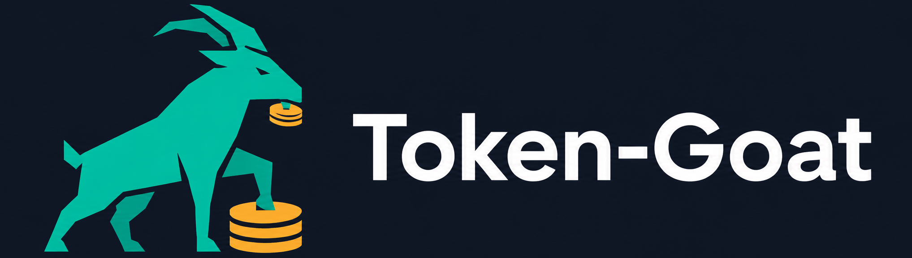
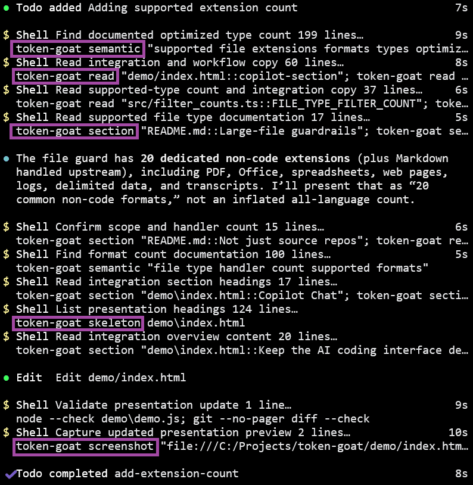

Approval demo / VS Code Copilot Chat
The working theory
Give the AI the material it needs, not everything it can drown in.
Token-Goat lets an AI harness hand simple, deterministic work to the local CPU: mapping a project, extracting a document section, querying data, measuring context, or folding noisy output. The harness gets a small, inspectable result and keeps its context for the actual task. With less irrelevant material competing for attention, the AI has a clearer evidence set and more room to reason about the task; that improves the conditions for useful work, without promising that any AI decision will be correct. When a long session is compacted, Token-Goat also keeps a recoverable trail of recent files, cached results, handoffs, and compact session metadata so the agent can pick up the right thread instead of guessing or reopening everything.
Safety: when Token-Goat detects a known prompt-injection pattern in fetched material, it marks that material as untrusted. In practical terms, a document or web page cannot quietly turn into instructions for the AI.
For the reviewer
A short path to an informed pilot decision.
Value: smaller tool-result payloads before a repeated context can be reused.
Control: every narrowed result names the file, symbol, and line range.
Proof: this page ships with repeatable commands, not simulated metrics.
Cache is useful, not sufficient
Caching reuses context. It does not choose better context.
Copilot Enterprise caching can make repeated prompt material cheaper or faster to process. Keep that benefit. This demo measures a different layer: how much tool output enters the active context for the first task and for each changed task. Token-Goat reduces that payload before caching can help with later reuse.
GitHub's Copilot documentation says tool results are held in the context window. Token-Goat narrows those results before they become conversation material. A cache can reuse a broad result; it cannot make that result more relevant or give the context window its space back so the AI can reason more clearly.
Read GitHub's context documentation ->The engine underneath
Index once. Read the right thing afterward.
Token-Goat parses the tracked project into a local SQLite catalog of symbols, sections, and references. Think of it as a small private table of contents for the material on that machine, not a copy of the whole project sent to the AI.
Maps, targeted reads, caller lookups, and semantic discovery query that catalog first. The AI gets the relevant file, section, or function only when the task calls for it.
token-goat index
Build or refresh the project catalog.
token-goat worker start
Keep changed files current in the background.
> token-goat index
Indexed 22 files into the symbol index.
Skipped 575 unchanged files.
> token-goat symbol writeParseResult
Found: src/parser.ts, lines 2420-2473
Next step: read that function only.
Ten captured workflows
Start with the job Copilot is being asked to do.
More than context trimming
Useful safeguards when context comes from outside the codebase.
Prompt injection fencing. When Token-Goat detects known attack patterns in fetched content, it marks the material as untrusted and fences it so it is not presented as instructions.
Non-code-aware reads. PDFs are routed to metadata, outline, and page-scoped text extraction instead of a raw binary read. SQLite access is limited to read-only SELECT queries.
Inspectable evidence. Screenshot capture, compact maps, symbol reads, semantic discovery, and context budgets make each narrowing decision visible to the reviewer.
Operating boundary
Local by default. Visible by design.
Local processing. The index, caches, and compact handoffs stay on the developer machine. Token-Goat has no telemetry, analytics, background reporting, or silent outbound connections.
Explicit network actions. Network access is limited to actions the user or agent explicitly requests, such as fetching an image or using an already authorized document integration.
Reversible setup. The integration is installed per supported harness and can be removed with the matching uninstall command.
Where this fits
Keep the AI coding interface developers already use.
Install Token-Goat once on each machine where it is enabled, then let the selected AI-agent integration guide broad tool calls toward narrower, indexed reads in the background. Copilot Chat is the interface shown in this demo, not the only supported path. Developers keep using their usual AI coding tool; the commands remain available when someone wants to inspect the evidence directly in a terminal.
Token-Goat recognizes 101 distinct extensions: 83 source and structured-text extensions for indexed reads, plus 20 formats with dedicated large-file guidance. HTML and HTM appear in both groups. That includes PDFs, Office files, spreadsheets, web pages, logs, delimited data, and transcripts.

token-goat install --copilot
Show captured setup details ->
Copilot setup evidence
What the Copilot integration installs.
Loading captured setup details...
Everything Token-Goat can do
The complete feature list.
Every registered command is listed below. After setup on a developer machine, supported AI agents can choose and use these tools through the installed integration or MCP server; this list is here so reviewers can see what is available.